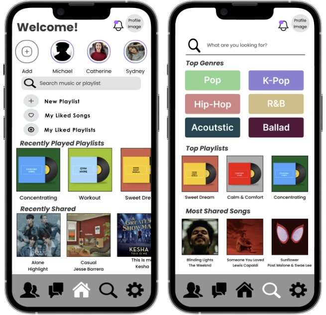
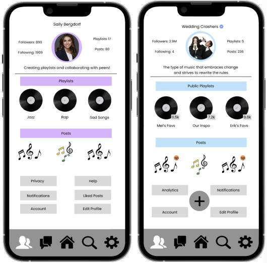
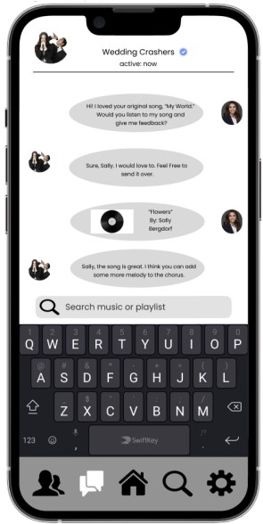
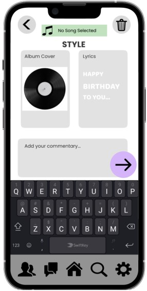
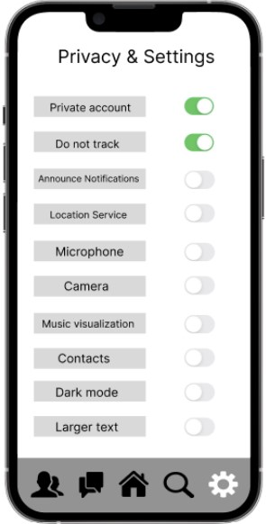
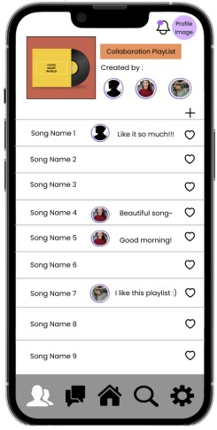

New Online Community Design
SoundShare: New Social Media App for Music Sharing
Project Info
Team Members
Haewon Park, Reyna Bhens, Mya Strayer, Ino Yang
Tool
Figma
Duration
3 Weeks
Elevator Pitch
Our social media app is designed for music enthusiasts who love to share their favorite songs and music clips with their friends and the public. Our platform provides users with a range of features, including the ability to edit their music using tools such as music cut and music mosaic. When we design our app, we use Amy Jo Kim’s Nine Timeless Principles for Building Community [1] as reference. We offer two versions of the app: a free version that allows users to create 15-second music clips and a subscription-based version that provides access to the full range of features, including the ability to curate playlists. Users can use the basic functions of the app for free, but they must subscribe to interact with others and join groups. Our target audience is the general public, and we welcome everyone to our community, including those with disabilities. Additionally, special features will be offered to verified artists in order to encourage community growth. To ensure that everyone can use our app, we provide a range of accessibility features, such as music sound wave visualization, which is particularly useful for those with hearing impairments or those in noisy environments. Our app is designed to be user-friendly and intuitive, making it easy for everyone to create and share their music clips. We believe that music is a powerful medium for self-expression and connection, and we are committed to creating a safe and welcoming space for music lovers to share their passion with others.
Design
Our proposed community is an application meant for music sharing and playlist creation. Its main features would include the ability to send / share song clips while adding your own personal commentary (something like ‘this made me think of you’ or ‘on repeat rn’), while also connecting users together based on their music tastes. In this way, the app would act as a networked public, where users can construct a virtual space for their in-person interactions and relationships [2]. Unlike other applications, we would have a default privacy to user’s accounts, where they would have to send their link to friends in order for them to see their account. We include this feature in order to protect the user’s privacy while also diminishing the potential of context collapse, as users will feel more open to genuine interactions with a smaller audience [3]. This however could be changed in the settings if a user wanted to make their account visible to strangers through the Explore page. Users could also change their settings off of the default ‘family friendly’ version, where they would have access to explicit content after inputting their date of birth.
One of the primary ways that we would attract new members would be through partnerships with artists, where they would use the app to share their playlists as well as tease new music to their fans. Artists might also encourage participation by offering giveaways or special perks to their followers. With the exception of music teasing and adding commentary, this would be very similar to a Spotify profile so new users wouldn’t need to spend a lot of time or energy learning how to use the application, minimizing some of the challenges that come with being a newcomer [4]. We would retain members by offering them something that other applications do not; that is the ability to connect with their friends based on music preferences, to discover new songs or artists, and to see a more personal side of some of their favorite artists while also being some of the first to hear their new music [5]. The emphasis on tight communities and close connections would work in creating a strong bond-based community both between listeners and artists [6].
We would also offer a subscription model, where users could make collaborative playlists with their friends and listen to full songs directly off of the app (as opposed to just snippets of music). While a paid subscription would offer more affordances to the user, there wouldn’t be any differences in the types of participation users will contribute, as anyone can post their favorite songs and follow friends / favorite artists. There would be a difference between the average user and music creators (who would be verified) though, as the verified accounts would be able to upload new music as opposed to only posting pre-existing songs. Limiting the amount of user-generated content to only verified accounts would also limit the opportunities for bad behavior [7]. Verified accounts would also have the opportunity to view their analytics, and would have more affordances in their public posts (such as adding links, creating polls, etc.).
Since most users would be limited to only posting songs that are on a linked platform (such as Apple Music, Spotify, etc.), there would be some regulation as to what is appropriate on the app. However, in the case that someone uses an appropriate song to make an inappropriate statement, there would be automated bots that would flag harmful words / phrases as potential hate speech and warn users if their posts could be misconstrued. The app would also repeatedly remind users about the overall norms of the community in order to limit harassment or trolling [8]. Additionally, users could report posts that they find offensive directly from the post. In order to gauge the success of our community, we would look at the total number of music streams / posts rather than the number of accounts, as one user might have multiple accounts to accommodate for a diverse music taste.
Following Amy Jo Kim’s Nine Principles of Design, we would also expand this community into the real world. Our music platform would host regular music-related events to promote engagement among members of our community. These events may include music sharing meetings with famous musicians as prizes, and prizes are distributed based on participation. Overall, SoundShare offers a high degree of freedom for creating music playlists, and we support cooperation between friends or people with similar musical tastes. And, as users use the app, the algorithm would learn their taste and suggest new music or users that match their personal tastes. Through its very intentional design, our platform would provide a collaborative and engaging space for music lovers to connect and create meaningful experiences.
Mockups
Home and Explore Page
The home page allows users to add posts to share songs. Their own posts and other users’ posts can also be reviewed. Users can create new playlists and check playlists and songs they liked and recently played. Users also can check recently shared songs. In addition, the search bar brings users to the explore page to search for specific songs, playlists, or artists. The explore page allows users to search songs by genre, popular playlists, and the most shared songs. These types of searches help them find music based on their tastes and current trends in the music community. As the user uses the app, this page becomes more specialized as it learns the user’s music taste. 
Profile Page and Verified Profiles
This figure represents the typical page that a user would have. The profile page includes followers, following, posts, playlists, and a bio. The bio is changeable through the account button at the bottom of the profile page. There is also a spot for playlists and posts where the most popular or recent of both categories are displayed. If another user was viewing this profile, everything would be the same despite the settings options at the bottom of the page. Verified profiles would be very similar to a normal profile, but with the ability to see analytics and insights of the profile. This includes being able to see the number of followers for each playlist, the business analytics of sponsored posts, and the trends of following / engagement for the profile. Most importantly, these profiles would have the option to add new music clips to the site (the big plus sign), which is where they could ‘leak’ new music to their fans. 
DMs
DMs are a place where users can share music, advice, tracks, and playlists with other application users. Since our application is creating a bond-based community, these personalized messages would be incredibly important at relationship formation and maintenance [9]. There are no limits to who can message who nor are there limits on receiving messages. If you are uncomfortable for any reason with the users messaging you, you can choose not to respond or block the user. In the screen shown, there is an interaction between a popular verified user and a less popular artist. The less popular user is asking for advice for her new song that was recently released on the application. This is a demonstration of how interactions within this online community can be greatly beneficial to musical welfare. 
Public Post
Public posts take one of two forms, either uploading the album cover or specific lyrics. Similar to Instagram, users would choose which part of the song they’d like to post and then edit the audio clip to include that specific part. Additionally, users can add their own commentary to the post, and could tag users or artists in this caption by using the @ feature. Music would have to be available on the site either through a third party connection (such as Spotify, Apple Music, etc.) or was uploaded directly by one of the verified users. 
Privacy / Settings
Lee Higgings mentioned in his article that creating a welcoming “safety within safety” environment is important [10]. This page is designed to give users control over the privacy and customization options. Users can choose to make their account public or private. With a private account, only invited friends can see the homepage and playlists. In addition, there are other settings users can adjust, such as preferences related to the usage of camera and microphone, music visualization, and larger text options for users who may require it. Our platform prioritizes user privacy and safety, as usually the most vulnerable users are the ones that are harmed by default publicness [11]. 
Collaborative Playlist
This page is designed to provide a space for users to create a music playlist with their friends and express their feelings through music. Each playlist has a manager, with the user who creates the playlist being the default manager, which provides a range of roles for the community. Once permission is granted by the manager, any user who has joined the playlist can modify it by adding or removing songs, changing the order of songs, and making any other authorized modifications. Our hope is that this feature will allow users to collaborate with their friends and create playlists that reflect their shared interests and emotions. 
User Scenarios
Ben is an avid social media user, and has amassed a few thousand followers on numerous platforms by posting lifestyle content. One of the things he shares frequently on his Instagram stories are some of his favorite songs, using the features of the app. From doing this, he has gained a following of users that specifically follow him for his music taste. These followers specifically want to see when he posts new or ‘undiscovered’ songs / artists, and aren’t as interested in the rest of his content. Currently, he has a story highlight reel linked to his profile that contains all of these posts. However, since it’s hard to determine when a user is posting a song to their story on social media rather than a normal post, some of these users start to unfollow him due to this frustration. Realizing this, Ben looks to link his music taste to a specific site, but is disappointed with the lack of personality that can be incorporated into a Spotify playlist. Therefore, he turns to our community as a way to share his music to a more general audience while still incorporating his own style and personality. Jenna is a college student who loves music and recommends it to others. She will share a specific song with her friends if she loves a particular piece. Various apps make features to share music, but their primary purpose is for something other than music, which makes her find another app. She found an app that only allows sharing information about music and part of a song to give a taste of recommendation. However, she wants to keep her suggestion private from unknown users on the app because some might not agree with her. So, she uses a function to share her music only with the people she chooses and chat privately. When she clicks a button to share the music, a pop-up screen asks her to choose to post it publicly or send it to a certain person or group.
Competitive Analysis
SoundShare is designed to allow users to post short clips and moments from music, contribute to playlists, and subscribe to listen to complete songs. Entering the music community, many platforms have similar features. One application that has a similar idea is MuzApp. MuzApp is an application that allows users to listen to music ad-free while maintaining social interaction through posting tracks and pinning moods to their profile. Unfortunately, this application is no longer available to download to any device. While the reasoning of its disappearance is unclear, SoundShare will draw from the well designed features of this platform while mixing together others. MuzApp was similar to Spotify; however, it has more of the features of a social platform. SoundShare would be different because we allow users to post their music and contribute to public playlists. Similarly to Spotify and Apple Music, subscriptions are required to get rid of ads and have a seamless user experience Spotify also has a similar feature where users can add friends to make a contributive playlist. Users being able to post original music clips also ties back to Tik Tok and Instagram, where there are endless short videos with unique sounds. Users can post their unique sounds; others engage with them when they see their videos. SoundShare varies here because users can listen to the whole song rather than just a snippet of it. With the subscription, there is no need to go hunting for a song you heard because it will be available on the app. Soundcloud is another similar musical application. Soundcloud differs from Spotify and Apple Music because smaller artists can post music. Users can then stop and drop comments and save the songs to their playlists or follow artists. However, it needs to have the social aspect of contributing to playlists or personally interacting with other artists. The online community we are creating will tie together the creative aspects with social contribution.
Ethical Reflections
When it comes to ethics, most applications have a skewed viewpoint. For example, companies such as Tik Tok operate because the application is addictive, so despite them taking much of our data as a foreign entity, we are not willing to give it up. It is also important to note that to study ethics, raises ethical questions of its own. “Is it ethically right to study chat room participants without their consent? Is it right to annoy/ disturb significant numbers of participants in order to obtain consent from a few?” asks Bruckman and Hudson (Bruckman). Due to the very study that determines ethical questionability being potentially unethical, our goal with creating SoundShare is to avoid ethical concerns completely. When using the app, in the settings feature there is an option to make your account private, ask the app not to track data and have the option to change that easily, access your location, and access your camera and microphone. With these in mind, our application will exceed the ethics of most other applications in place. By giving consumers full access to controlling their privacy, our application will remain ethical and we will be open to hearing feedback as well. Lastly, we are implementing features for those who are visually or audibly disabled. This will allow people that are passionate about music a chance to participate in this community despite any difficulties.
References & Appendices
[1] Amy Jo Kim. Nine Principles of Community Design. [2] Boyd, D. (2014). It's complicated: The social lives of networked teens. Yale University Press. Introduction. [3] Xiao, S., Metaxa, D., Park, J. S., Karahalios, K., & Salehi, N. (2020, April). Random, messy, funny, raw: Finstas as intimate reconfigurations of social media. In Proceedings of the 2020 CHI conference on human factors in computing systems (pp. 1-13). [4] Robert E. Kraut and Paul Resnick. 2012. Chapter 5: The Challenges of Dealing with Newcomers. In Building Successful Online Communities: Evidence-Based Social Design. MIT Press. [5] Robert E. Kraut and Paul Resnick. 2012. Chapter 6: Starting New Online Communities. In Building Successful Online Communities: Evidence-Based Social Design. MIT Press. [6] Yuqing Ren, Robert Kraut, and Sara Kiesler. 2007. Applying Common Identity and Bond Theory to Design of Online Communities. Organization Studies 28, 3: 377–408. [7] Amy Bruckman. 2022. Chapter 6: What Is Bad Online Behavior, and What Can We Do About It? In Should You Believe Wikipedia? Online Communities and the Construction of Knowledge. Cambridge University Press. [8] Cheng, J., Bernstein, M., Danescu-Niculescu-Mizil, C., & Leskovec, J. (2017, February). Anyone can become a troll: Causes of trolling behavior in online discussions. In Proceedings of the 2017 ACM conference on computer supported cooperative work and social computing (pp. 1217-1230). [9] Goode, L. (2019, January 27). Private Messages Are the New (Old) Social Network. WIRED. Retrieved from: https://www.wired.com/story/private-messages-new-social-networks/ [10] Higgins, Lee. (2009). Community music and the welcome. International Journal of Community Music. 1. 391-400. 10.1386/ijcm.1.3.391_1. [11] Cho, A. (2018). Default publicness: Queer youth of color, social media, and being outed by the machine. New Media & Society, 20(9), 3183-3200.